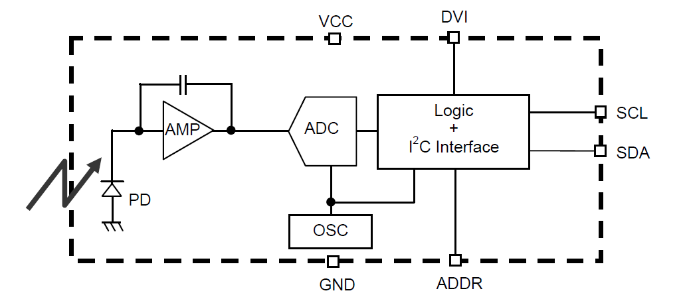
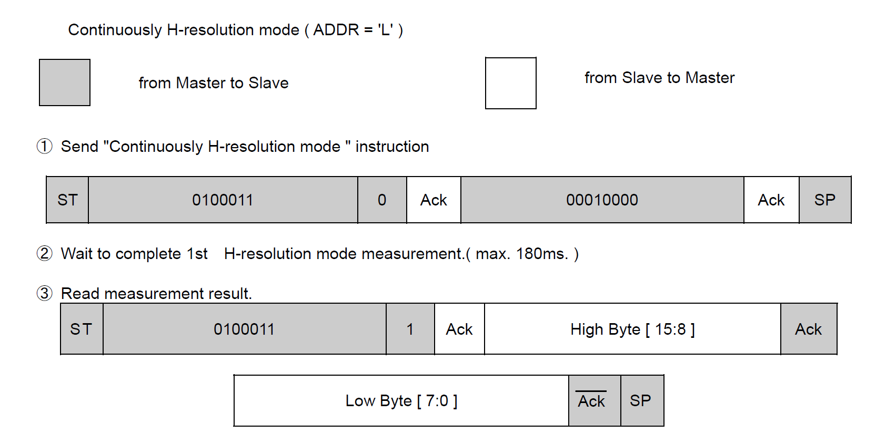
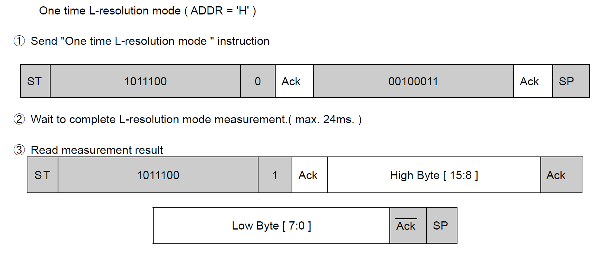
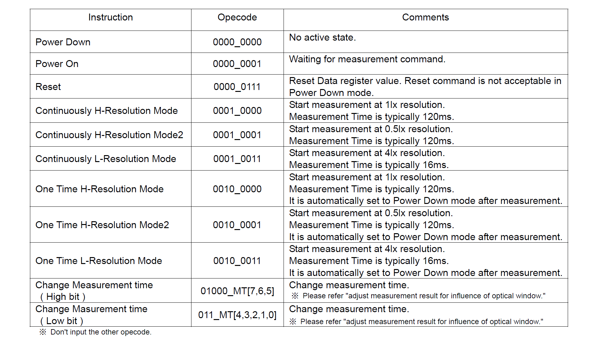
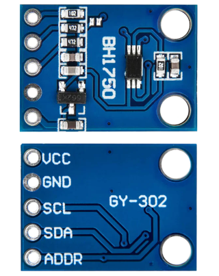
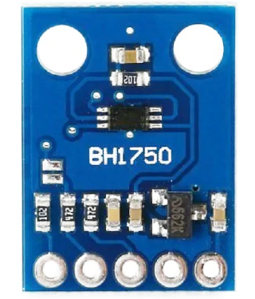
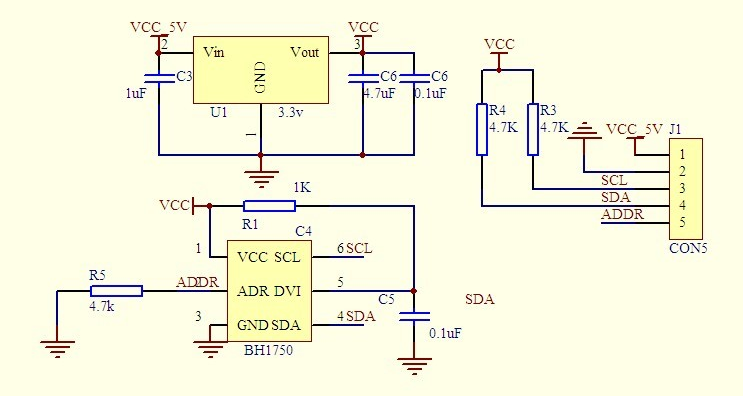
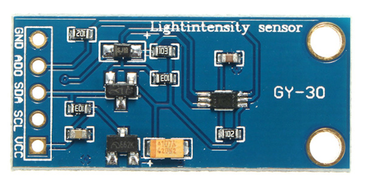
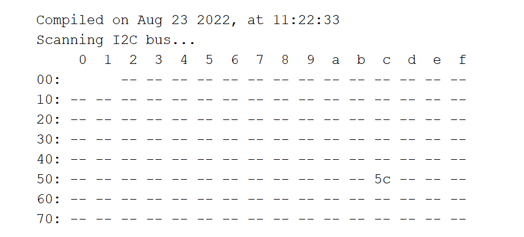
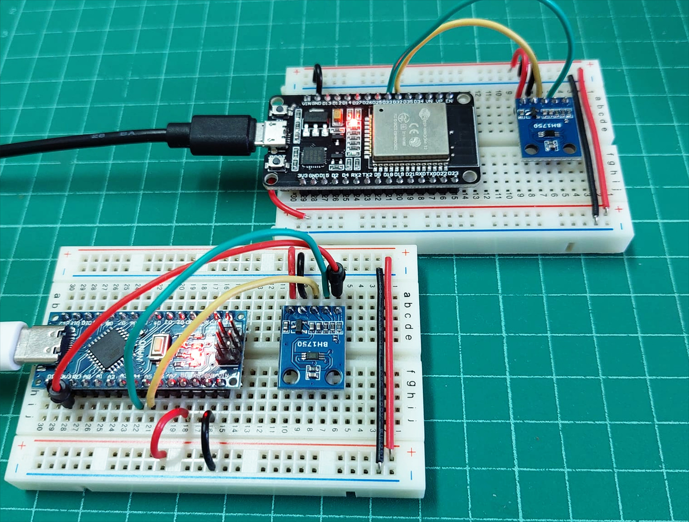

BH1750 Ambient Light Sensor Module#
▷ Rohm BH1750#
ไอซี BH1750FVI (Datasheet) ผลิตโดยบริษัท Rohm Semiconductor เป็นเซนเซอร์วัดความเข้มแสง (Light Intensity) มีหน่วยการวัดเป็น "ลักซ์" (Lux หรือ Lumen / m^2) สามารถวัดแสงที่สามารถมองเห็นได้ (Visible Light) และตอบสนองได้ดีสำหรับแสงในช่วงประมาณ 500 ถึง 600 นาโนเมตร
ไอซีสื่อสารข้อมูลได้ด้วยบัส I2C (ความเร็วได้ถึง 400kHz) ให้ข้อมูลจากการวัดแสงที่มีความละเอียด 16 บิต

รูป: BH1750 Block Diagram
ภายในไอซี BH1750 ประกอบด้วยส่วนต่าง ๆ เริ่มต้นด้วย PD (Photo Diode) สำหรับรับแสง เมื่อได้รับแสงก็จะมีกระแสไฟฟ้าไหล มีการแปลงกระแสให้เป็นแรงดันไฟฟ้าโดยใช้วงจร Opamp-based Integrator แล้วแปลงให้เป็นข้อมูลดิจิทัล โดยใช้วงจร ADC (Analog-to-Digital Converter) และมีหน่วยประมวลผลแบบดิจิทัลสำหรับเชื่อมต่อสื่อสารข้อมูลด้วยบัส I2C
ไอซีมีขา ADDR หนึ่งขาสำหรับกำหนดแอดเดรสของอุปกรณ์ (0x23: ADDR=0 / floating และ 0x5C: ADDR=1 ต่อกับ +3.3V)
ในการวัดค่าแสง แบ่งออกได้เป็นสองรูปแบบการทำงาน คือ
- One-Time Measurement เป็นการวัดค่าแสงเพียงหนึ่งครั้งแล้วไอซีจะเข้าสู่โหมดประหยัดพลังงาน (Powerdown) โดยอัตโนมัติ
- Continuous Measurement เป็นการวัดค่าแสงต่อเนื่องซ้ำไปเรื่อย ๆ
ไอซี BH1750FVI สามารถโปรแกรมเลือกโหมดการวัดค่าและระยะเวลาในการวัดได้ดังนี้
- H-Resolution Mode 1 เป็นโหมดการวัดความละเอียดสูง (1 Lux) ซึ่งใช้เวลาในการวัดประมาณ 120 msec
- H-Resolution Mode 2 เป็นโหมดการวัดความละเอียดสูง (0.5 Lux) ซึ่งใช้เวลาในการวัดประมาณ 120 msec
- L-Resolution Mode เป็นโหมดการวัดความละเอียดต่ำ (4 Lux) ซึ่งใช้เวลาในการวัดประมาณ 16 msec เหมาะกับสภาวะแสงมาก
| Measurement Mode | Measurement Time (typ./max.) | Resolution (lx) |
|---|---|---|
| H-resolution Mode 2 | 120 ms / 180 ms | 0.5 |
| H-Resolution Mode 1 | 120 ms / 180 ms | 1.0 |
| L-Resolution Mode | 16 ms / 24 ms | 4.0 |

รูป: ตัวอย่างการส่งคำสั่งไปยัง BH1750 (เชื่อมต่อด้วยบัส I2C)
เพื่อเริ่มต้นวัดค่าแสงแบบต่อเนื่อง ให้ทำงานในโหมด H-Resolution 1x, Continuous Measurement
และมีค่าบิต ADDR=0 (Low) (ใช้หมายเลขแอดเดรส 0x23)

รูป: การเชื่อมต่อด้วยบัส I2C เพื่อส่งคำสั่งไปยัง BH1750 ให้เริ่มต้นวัดค่าแสงแบบครั้งเดียว
ให้ทำงานในโหมด L-Resolution 4x, One-Shot Measurement
และมีค่าบิต ADDR=1 (High) (ใช้หมายเลขแอดเดรส 0x23)
สำหรับค่าแสงที่วัดได้ จะมีขนาด 16 บิต แบ่งเป็นสองไบต์ โดยอ่านค่าไบต์ High Byte (บิต 15..8) และ Low Byte (บิต 7..0) จากนั้นจะต้องนำค่า 16 บิต (unsigned integer) มาหารด้วย 1.2 (typ.) จึงจะได้ค่าความเข้มแสงที่มีหน่วยเป็นลักซ์ (lx)

ตาราง: คำสั่ง (Instructions) ของ BH1750
▷ GY-302 BH1750 Module#
โมดูล BH1750 ที่ได้นำมาทดลองใช้งานคือ GY-302 Light Sensor Module ซึ่งมีไอซีเซนเซอร์ BH1750FVI ที่ทำงานด้วยแรงดันไฟเลี้ยง +3.3V (+2.4V ~ +3.6V) ดังนั้นจึงต้องมีวงจรแปลงระดับแรงดันจาก VCC=+5V ให้เป็น +3.3V (เช่น ใช้ไอซี LDO Voltage Regulator เบอร์ 662K) โมดูลนี้สามารถใช้แรงดันไฟเลี้ยงได้ในช่วง +3.3V ~ +5V
โมดูล GY-302 มีขาดังนี้
| Pin | Description |
|---|---|
| VCC | Voltage supply (3.3V ~ 5V) |
| GND | Ground |
| SCL | I2C clock pin |
| SDA | I2C data pin |
| ADDR | I2C address pin |

รูป: โมดูล GY-302 มุมมองจากด้านบน (ที่มีไอซีเซอร์วัดแสง) และด้านล่างตามลำดับ

รูป: มุมมองด้านบน (Top View) และการจัดเรียงขาจากซ้ายไปขวาคือ ADDR, SCL, SDA, GND และ VCC

รูป: ผังวงจรของโมดูล GY-302 (Source: wiki.sunfounder.cc)
ข้อสังเกต:
- ตามผังวงจรของ GY-302 ขา ADDR ของ GY-302 มีตัวต้านทานแบบ Pull-down เชื่อมต่อกับ Gnd (
0x23default or floating และ0x5CADDR=1) ขาสัญญาณ SDA และ SCL มีเพียงตัวต้านทานแบบ Pull-up (4.7kΩ) เชื่อมต่อกับ 3.3V - โมดูลอื่นที่ใช้ไอซี BH1750 เช่น โมดูล GY-30 ซึ่งมีความแตกต่างกัน กล่าวคือ นอกจากไอซี BH1750FVI แล้วยังมีวงจรแปลงระดับแรงดันลอจิก (Logic Level Shifter) โดยใช้ทรานซิสเตอร์ประเภท MOSFET สำหรับสัญญาณ SDA และ SCL ซึ่งเหมาะสำหรับการนำไปต่อใช้งานกับบอร์ด เช่น Arduino Uno ที่ทำงานที่ระดับแรงดัน +5V แต่โมดูล GY-302 ไม่มีวงจรแปลงระดับแรงดันลอจิกตามที่กล่าวไป (แต่ก็สามารถใช้ได้เช่นกัน)

รูป: โมดูล GY-30
โค้ด Arduino Sketch ต่อไปนี้ สาธิตการตรวจสอบอุปกรณ์ที่เชื่อมต่อกับบัส I2C ถ้าใช้บอร์ด Arduino Uno หรือ Nano ให้ใช้ขา A4 และ A5 สำหรับสัญญาณ SDA และ SCL ตามลำดับ แต่ถ้าเป็นบอร์ด ESP32 สามารถเลือกใช้ขาได้ตามความเหมาะสม
//-------------------------------------------------------------------
// Author: RSP @ KMUTNB
// Date: 2022-08-21
// Target: Arduino ESP32 or Uno/Nano
//-------------------------------------------------------------------
#include <Wire.h>
// Select I2C Pins for ESP32
#define I2C_SDA_PIN (33)
#define I2C_SCL_PIN (32)
void setup() {
Serial.begin( 115200 );
while (!Serial) { delay(10); }
Serial.println( "\n\n\n" );
// __DATE__ and __TIME__ expand to current date and time (at compile time).
Serial.println( "Compiled on " __DATE__ ", at " __TIME__ );
// set I2C pins for ESP32
#if defined(ESP32)
Serial.println( "Set I2C pins for ESP32" );
Wire.begin( I2C_SDA_PIN, I2C_SCL_PIN );
#else
Wire.begin();
#endif
Wire.setClock( 100000 ); // 100kHz
}
#define LINE_SEP "--------------------"
void i2c_scan() {
char sbuf[32];
int n_devices = 0;
Serial.println( "Scanning I2C bus..." );
Serial.print( " " );
for ( uint8_t col=0; col < 16; col++ ) {
sprintf( sbuf, "%3x", col );
Serial.print( sbuf );
}
Serial.println( "" );
uint8_t addr=0;
for( uint8_t row=0; row < 8; row++ ) {
sprintf( sbuf, "%02x:", row << 4 );
Serial.print( sbuf );
for ( uint8_t col=0; col < 16; col++ ) {
if ( row==0 && addr<=1 ) {
Serial.print(" ");
} else {
Wire.beginTransmission( addr );
if ( Wire.endTransmission() > 0 ) {
Serial.print( " --" );
} else {
sprintf( sbuf, " %2x", addr );
Serial.print( sbuf );
n_devices++;
}
}
addr++;
}
Serial.println( "" );
}
Serial.println( LINE_SEP LINE_SEP LINE_SEP );
Serial.flush();
}
void loop() {
i2c_scan();
delay(5000);
}

รูป: ตัวอย่างข้อความแสดงการตรวจสอบอุปกรณ์ I2C devices และแอดเดรสที่ปรากฏ (0x5c)
ถัดไปเป็นตัวอย่างโค้ด Arduino Sketch สาธิตการใช้คำสั่งของไลบรารี
BH1750
เพื่ออ่านค่าจากโมดูล GY-302 BH1750
โดยเลือกใช้โหมด Hi-Resolution 1x, Continuous Measurement Mode
และเลือกใช้แอดเดรส 0x5C (ขา ADDR ต่อกับ 3.3V และได้ลอจิกเป็น High)
//-------------------------------------------------------------------
// Author: RSP @ KMUTNB
// Date: 2022-08-23
// Target: Arduino ESP32 or Uno/Nano
//-------------------------------------------------------------------
#include <Wire.h>
// This Arduino sketch requires following library for BH1750.
#include <BH1750.h> // https://github.com/claws/BH1750
// Select I2C Pins for ESP32
#define I2C_SDA_PIN (33)
#define I2C_SCL_PIN (32)
// Note: For arduino Uno or Nano, use A4 and A5 pins for SDA and SCL.
// Set the I2C address for the BH1750 device
#define BH1750_ADDR (0x5c) // 0x23 or 0x5c
// create an object from the BH1750 class
BH1750 bh1750;
void setup() {
Serial.begin( 115200 );
#if defined(ESP32)
// set I2C Pins for ESP32
Serial.println( "Set I2C pins for ESP32" );
Wire.begin( I2C_SDA_PIN, I2C_SCL_PIN );
#else
Wire.begin();
#endif
Wire.setClock( 400000 ); // set I2C speed to 400kHz
// set operating mode for BH1750:
// - 1 Lux resolution
// - 120 ms measurement time
// - continuous measurement mode
bh1750.begin( BH1750::CONTINUOUS_HIGH_RES_MODE, BH1750_ADDR, NULL );
delay(200);
}
void loop() {
while ( !bh1750.measurementReady() ) {
delay(100);
}
float lux = bh1750.readLightLevel();
#if defined(ESP32)
Serial.printf( "Light: %.1f lx\n", lux );
#else
Serial.print( "Light: " );
Serial.print( lux, 1 ); // only 1 digit after the decimal point
Serial.println( " lx" );
#endif
delay( 1000 );
}
แต่ถ้าจะลองเขียนโค้ดโดยไม่ใช้ไลบรารีสำหรับ BH1750 ก็มีตัวอย่างต่อไปนี้
โดยตั้งค่าแอดเดรสเป็น 0x23 และเลือกโหมดการวัดเป็น
Hi-resolution (1 Lux), one-shot measurement mode
//-------------------------------------------------------------------
// Author: RSP @ KMUTNB
// Date: 2022-08-23
// Target: Arduino ESP32 or Uno/Nano
//-------------------------------------------------------------------
#include <Wire.h>
// Select I2C Pins for ESP32
#define I2C_SDA_PIN (33)
#define I2C_SCL_PIN (32)
// Note: For arduino Uno or Nano, use A4 and A5 pins for SDA and SCL.
// Set the I2C address for the BH1750 device
#define BH1750_ADDR (0x23) // 0x23 or 0x5c
void setup() {
Serial.begin( 115200 );
#if defined(ESP32)
// set I2C Pins for ESP32
Serial.println( "Set I2C pins for ESP32" );
Wire.begin( I2C_SDA_PIN, I2C_SCL_PIN );
#else
Wire.begin();
#endif
Wire.setClock( 400000 ); // set I2C speed to 400kHz
delay(100);
}
void loop() {
float lux;
if ( BH1750_read(BH1750_ADDR, &lux) ) {
#if !defined(ESP32)
Serial.print( lux, 1 );
Serial.println( " [lx]" );
#else
Serial.printf( "%.1f [lx]\n", lux );
#endif
} else {
Serial.println( "Sensor reading error!" );
}
delay(1000);
}
bool BH1750_read( uint8_t addr, float *lux ) {
uint8_t buf[2];
*lux = 0.0;
Wire.beginTransmission( addr ); // send the addr/write byte
// One-shot, Hi-Resolution Mode (1 Lux Resolution)
Wire.write( 0x20 ); // send the instruction to start measurement
if( Wire.endTransmission() > 0 ) {
Serial.println( "No response from the device!" );
return false;
}
delay(150); // wait at least 120 msec.
Wire.requestFrom( addr, 2, true );
if ( Wire.available() == 2 ) {
buf[0] = Wire.read();
buf[1] = Wire.read();
} else {
return false;
}
uint32_t value = buf[0];
value = (value << 8) | buf[1];
value /= 1.2; // convert raw data to Lux
*lux = value;
return true;
}

รูป: การต่อวงจรทดลองบนเบรดบอร์ดโดยใช้บอร์ดไมโครคอนโทรลเลอร์ Arduino Nano และ ESP32 อ่านค่าจากโมดูลเซนเซอร์ BH1750
▷ กล่าวสรุป#
บทความนี้ได้นำเสนอการใช้งานโมดูลที่มีไอซี BH1750 ซึ่งเป็นเซนเซอร์แบบดิจิทัลสำหรับการวัดความเข้มแสงในสภาวะแวดล้อมโดยรอบ โดยนำมาทดลองใช้งานร่วมกับบอร์ดไมโครคอนโทรลเลอร์ ESP32 และ Arduino Nano และเขียนโปรแกรมด้วย Arduino IDE
This work is licensed under a Creative Commons Attribution-ShareAlike 4.0 International License.
Created: 2022-08-23 | Last Updated: 2022-08-23